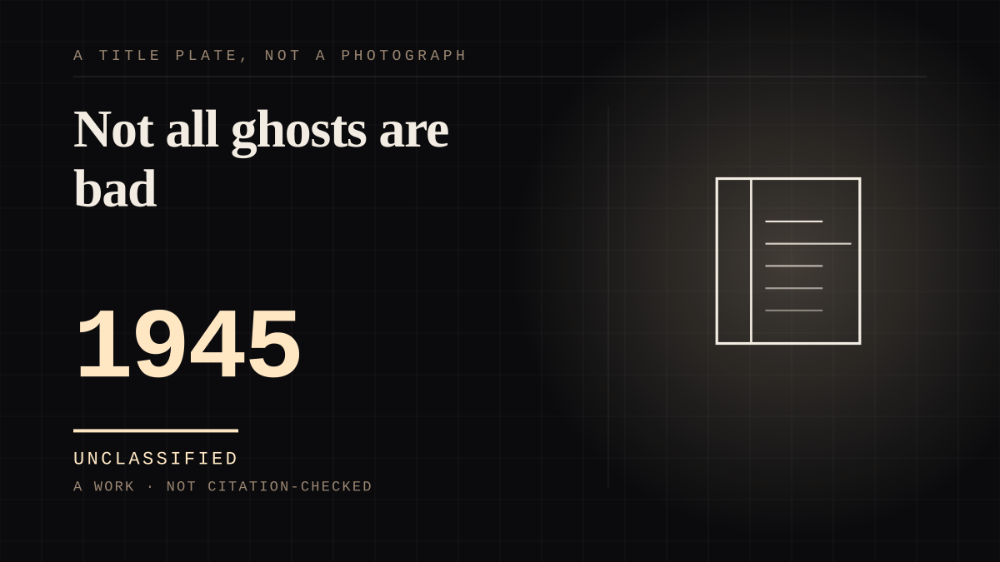

A work · 1945 · Postwar
Not all ghosts are bad
Made to answer a four-year-old's fear of the dark, by a man who made a cardboard cutout and hung it in a tree. Two men then claimed to have invented him.

The haunted shelf opened by the reason the shelf exists. Casper is a ghost whose entire design brief was to be verifiable-in-principle and safe in fact: according to Joe Oriolo, he was made on a Halloween night to assuage his four-year-old daughter Joan's fear of the dark, as a cardboard cutout of a friendly ghost hung in the backyard tree to show her that not all ghosts are bad. A ghost built as an intervention against a specific fear, for one named child, is the most parasocial brief a supernatural figure has ever had - and the child's side of it is checkable, which is the only part of the story that is. Then the commercial part. Casper ran from 1945, and the character ended up in Harvey Comics, in television and in feature films, which means the figure that answered one girl's fear of the dark became a property that could be licensed. The site keeps two honesty notes. The first is that the origin is genuinely disputed: Oriolo claims the cardboard cutout, his daughter has corroborated it, and Seymour Reit maintains Casper was born with a short story he conceived and wrote entirely himself and handed to Oriolo to illustrate - 'Joe created the actual cartoon of the character - but the concept, series, idea and plotline were mine, prior to Joe's involvement.' A corpus that files contested authorship under a single name would be lying, so both are recorded. The second is that haunted is defined on belief in presence, not on the supernatural: Casper is not filed as a ghost story but as a figure a child was prepared to believe in, which is a different and more useful thing. The most parasocial detail is the one nobody chose: the Apollo 16 command and service module was given the call sign Casper, because its pilot Ken Mattingly thought 'there are enough serious things in this flight, so I picked a non-serious name.' A friendly dead child's ghost ended up naming a spacecraft in orbit.
Where it sits
1900 1900-1949 · 1945 1949
Provenance · 2 source record(s)
- retrievableFirst appearance as 'The Friendly Ghost', 16 November 1945; creators credited as Seymour Reit, Joe Oriolo and Vincent E. Valentine II. On the disputed origin: 'The origins of Casper are disputed, with both Seymour Reit and Joe Oriolo claiming to be the character's creator. According to Oriolo, Casper was created on a Halloween night to assuage his four-year-old daughter Joan's fear of the dark. He made a cardboard cutout of a friendly ghost and hung it in the backyard tree to show her that not all ghosts are bad.' 'Though Joan has corroborated this story, Seymour Reit maintains that Casper was born with a short story which he conceived and wrote entirely by himself and gave to Oriolo to illustrate. Reit concluded, "Joe created the actual cartoon of the character - but the concept, series, idea and plotline were mine, prior to Joe's involvement."' And the call sign: 'The Apollo 16 Command and Service Module was given the call sign "Casper", since its pilot Ken Mattingly thought, "there are enough serious things in this flight, so I picked a non-serious name."'Casper the Friendly Ghost. Wikipedia. ↗
- unverifiedObituary corroborating Oriolo's side of the authorship dispute. The publisher returns 403 to an unauthenticated request, so this agent did not read it; the citation is recorded because Wikipedia cites it for the same claim, not because the text was verified here.Orlando, J. D. 'Cartoonist Joseph D. Oriolo, Creator of Casper the Ghost.' Chicago Tribune, 27 December 1985. ↗
Connected · 2 out, 4 in
It sits in